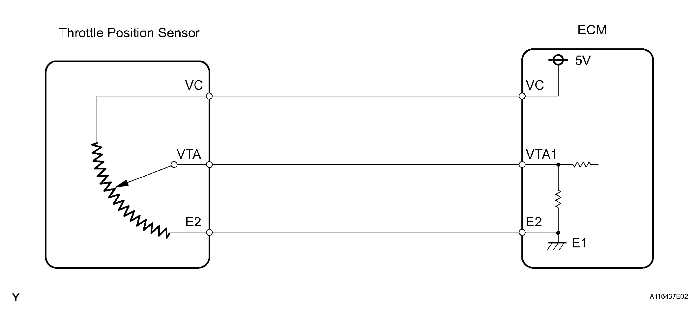

DTC P0120 Throttle / Pedal Position Sensor / Switch "A" Circuit; DTC P0122 Throttle / Pedal Position Sensor / Switch "A" Circuit Low Input; DTC P0123 Throttle / Pedal Position Sensor / Switch "A" Circuit High Input: Wiring Diagram

Courtesy of © TOYOTA, LICENSE AGREEMENT TMS1002